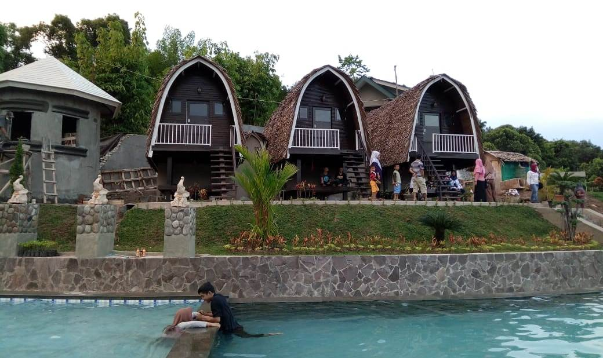

WISATA PALOPO
profil Palopo
Kota Palopo tidak hanya mendapat predikit sebagai kota Idaman. Namun keindahan alamnya juga membuat kota ini semakin bersinar
Baca selengkapnya >>>>>

WISATA PALOPO
Profil Palopo
Jika sedang pergi ke Kota Palopo jangan lupa singgah di Bukit Kambo. Sebuah tempat wisata ngehits di Kota Palopo yang tidak pernah sepi pengunjung
Baca selengkapnya >>>>>